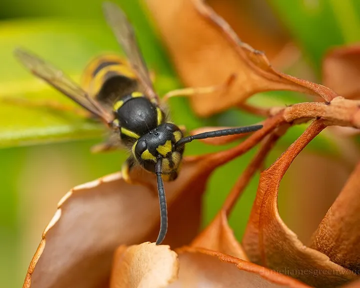

Siebenpunkt-Marienkäfer oder Asiatischer Marienkäfer?
Der heimische Siebenpunkt hat immer genau sieben Punkte. Der Asiatische Marienkäfer ist bunt gemischt und trägt ein dunkles M auf weißem Grund.


Die Unterschiede
| Siebenpunkt-Marienkäfer | Asiatischer Marienkäfer | |
|---|---|---|
| Punkte | immer genau sieben | null bis neunzehn, sehr wechselnd |
| Grundfarbe | rot bis orangerot | gelb, orange, rot oder schwarz |
| Halsschild | schwarz mit zwei weißen Flecken vorn | weißlich mit schwarzem M oder W |
| Herkunft | heimisch | aus Ostasien eingeschleppt |
Merkhilfe: Weißer Halsschild mit dunklem M? Dann ist es der Asiatische Marienkäfer.
Siebenpunkt-Marienkäfer im Porträt Asiatischer Marienkäfer im Porträt
Weitere Doppelgänger
-

HainschwebfliegeFoto: Alvesgaspar (Quelle, öffnet in neuem Fenster), CC BY-SA 3.0 (Lizenztext, öffnet in neuem Fenster), Wikimedia Commons 
Gemeine WespeFoto: Daniel Greenwood (Quelle, öffnet in neuem Fenster), CC BY 4.0 (Lizenztext, öffnet in neuem Fenster), Wikimedia Commons Hainschwebfliege oder Gemeine Wespe?
Schwebfliegen haben nur zwei Flügel und keine Taille. Sie stehen in der Luft und stechen nicht.
-

TigerschnegelFoto: Matt Muir (Quelle, öffnet in neuem Fenster), CC BY-SA 4.0 (Lizenztext, öffnet in neuem Fenster), Wikimedia Commons 
Spanische WegschneckeFoto: Kora27 (Quelle, öffnet in neuem Fenster), CC BY-SA 4.0 (Lizenztext, öffnet in neuem Fenster), Wikimedia Commons Tigerschnegel oder Spanische Wegschnecke?
Tigermuster bedeutet: verschonen. Einfarbig orange oder braun ist die Wegschnecke.
-

MaulwurfFoto: Christoph Moning (Quelle, öffnet in neuem Fenster), CC BY 4.0 (Lizenztext, öffnet in neuem Fenster), Wikimedia Commons 
SchermausFoto: Peter Trimming (Quelle, öffnet in neuem Fenster), CC BY 2.0 (Lizenztext, öffnet in neuem Fenster), Wikimedia Commons Maulwurf oder Schermaus?
Der Maulwurf frisst Tiere, die Schermaus frisst Wurzeln. Am Hügel siehst du, wer es war.